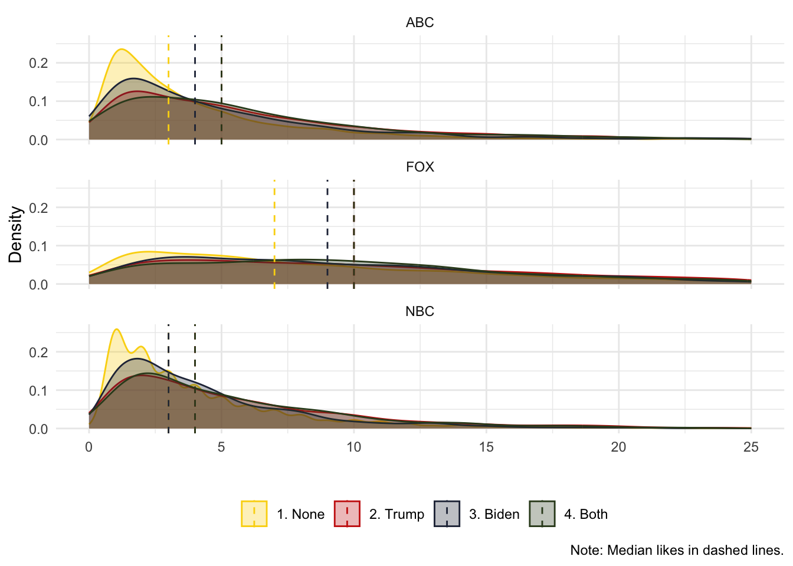

Chapter 3 Week 3: Dictionary-Based Approaches
Slides
- 4 Dictionary-Based Approaches (link or in Perusall)
3.1 Setup
As always, we first load the packages that we’ll be using:
library(tidyverse) # for wrangling data
library(tidylog) # to know what we are wrangling
library(tidytext) # for 'tidy' manipulation of text data
library(textdata) # text datasets
library(quanteda) # tokenization power house
library(quanteda.textstats)
library(quanteda.dictionaries)
library(wesanderson) # to prettify
library(knitr) # for displaying data in html format (relevant for formatting this worksheet mainly)3.2 Get Data:
For this example, we will be using data from Ventura et al. (2021) - Connective effervescence and streaming chat during political debates.
## text_id
## 1 1
## 2 2
## 3 3
## 4 4
## 5 5
## 6 6
## comments
## 1 MORE:\n The coronavirus pandemic's impact on the race will be on display as the\n two candidates won't partake in a handshake, customary at the top of \nsuch events. The size of the audience will also be limited. https://abcn.ws/3kVyl16
## 2 God please bless all Trump supporters. They need it for they know not what they do
## 3 Trump is a living disaster! What an embarrassment to all human beings! The man is dangerous!
## 4 This debate is why other counties laugh at us. School yard class president debate at best.
## 5 OMG\n ... shut up tRump ... so rude and out of control. Obviously freaking \nout. This is a debate NOT a convention or a speech or your platform. \nLearn some manners
## 6 It’s\n hard to see what this country has become. The Presidency is no longer a\n respected position it has lost all of it’s integrity.
## id likes debate
## 1 ABC News 100 abc_first_debate_manual
## 2 Anita Hill 61 abc_first_debate_manual
## 3 Dave Garland 99 abc_first_debate_manual
## 4 Carl Roy 47 abc_first_debate_manual
## 5 Lynda Martin-Chambers 154 abc_first_debate_manual
## 6 Nica Merchant 171 abc_first_debate_manual3.3 Tokenization etc.
The comments are mostly clean, but you can check (on your own) if they require more cleaning. In the previous code, I showed you how to lower, remove stopwords, etc., using quanteda. We can also do this using tidytext 4:
tidy_ventura <- ventura_etal_df %>%
# to lower:
mutate(comments = tolower(comments)) %>%
# tokenize
unnest_tokens(word, comments) %>%
# keep only words (check regex)
filter(str_detect(word, "[a-z]")) %>%
# remove stop words
filter(!word %in% stop_words$word)## mutate: changed 29,261 values (99%) of 'comments' (0 new NA)## filter: removed 3,374 rows (1%), 494,341 rows remaining## filter: removed 296,793 rows (60%), 197,548 rows remaining## text_id id likes debate word
## 1 1 ABC News 100 abc_first_debate_manual coronavirus
## 2 1 ABC News 100 abc_first_debate_manual pandemic's
## 3 1 ABC News 100 abc_first_debate_manual impact
## 4 1 ABC News 100 abc_first_debate_manual race
## 5 1 ABC News 100 abc_first_debate_manual display
## 6 1 ABC News 100 abc_first_debate_manual candidates
## 7 1 ABC News 100 abc_first_debate_manual partake
## 8 1 ABC News 100 abc_first_debate_manual handshake
## 9 1 ABC News 100 abc_first_debate_manual customary
## 10 1 ABC News 100 abc_first_debate_manual top
## 11 1 ABC News 100 abc_first_debate_manual events
## 12 1 ABC News 100 abc_first_debate_manual size
## 13 1 ABC News 100 abc_first_debate_manual audience
## 14 1 ABC News 100 abc_first_debate_manual limited
## 15 1 ABC News 100 abc_first_debate_manual https
## 16 1 ABC News 100 abc_first_debate_manual abcn.ws
## 17 1 ABC News 100 abc_first_debate_manual 3kvyl16
## 18 2 Anita Hill 61 abc_first_debate_manual god
## 19 2 Anita Hill 61 abc_first_debate_manual bless
## 20 2 Anita Hill 61 abc_first_debate_manual trump3.4 Keywords
We can detect the occurrence of the words trump and biden in each comment (text_id).
trump_biden <- tidy_ventura %>%
# create a dummy
mutate(trump_token = ifelse(word=="trump", 1, 0),
biden_token = ifelse(word=="biden", 1, 0)) %>%
# see which comments have the word trump / biden
group_by(text_id) %>%
mutate(trump_cmmnt = ifelse(sum(trump_token)>0, 1, 0),
biden_cmmnt = ifelse(sum(biden_token)>0, 1, 0)) %>%
# reduce to our unit of analysis (comment)
distinct(text_id, .keep_all = T) %>%
select(text_id,trump_cmmnt,biden_cmmnt,likes,debate)## mutate: new variable 'trump_token' (double) with 2 unique values and 0% NA## new variable 'biden_token' (double) with 2 unique values and 0% NA## group_by: one grouping variable (text_id)## mutate (grouped): new variable 'trump_cmmnt' (double) with 2 unique values and 0% NA## new variable 'biden_cmmnt' (double) with 2 unique values and 0% NA## distinct (grouped): removed 168,013 rows (85%), 29,535 rows remaining## select: dropped 4 variables (id, word, trump_token, biden_token)## # A tibble: 20 × 5
## # Groups: text_id [20]
## text_id trump_cmmnt biden_cmmnt likes debate
## <int> <dbl> <dbl> <int> <chr>
## 1 1 0 0 100 abc_first_debate_manual
## 2 2 1 0 61 abc_first_debate_manual
## 3 3 1 0 99 abc_first_debate_manual
## 4 4 0 0 47 abc_first_debate_manual
## 5 5 1 0 154 abc_first_debate_manual
## 6 6 0 0 171 abc_first_debate_manual
## 7 7 0 0 79 abc_first_debate_manual
## 8 8 0 0 39 abc_first_debate_manual
## 9 9 0 0 53 abc_first_debate_manual
## 10 10 0 0 36 abc_first_debate_manual
## 11 11 1 0 41 abc_first_debate_manual
## 12 12 0 0 28 abc_first_debate_manual
## 13 13 1 0 54 abc_first_debate_manual
## 14 14 0 0 30 abc_first_debate_manual
## 15 15 1 0 27 abc_first_debate_manual
## 16 16 1 1 31 abc_first_debate_manual
## 17 17 1 0 35 abc_first_debate_manual
## 18 18 1 1 32 abc_first_debate_manual
## 19 19 0 0 34 abc_first_debate_manual
## 20 20 1 0 37 abc_first_debate_manualRather than replicating the results from Figure 3 in Ventura et al. (2021), we will estimate the median number of likes a comment mentioning Trump, Biden, Both, and None get:
trump_biden %>%
# Create categories
mutate(mentions_cat = ifelse(trump_cmmnt==0 & biden_cmmnt==0, "1. None", NA),
mentions_cat = ifelse(trump_cmmnt==1 & biden_cmmnt==0, "2. Trump", mentions_cat),
mentions_cat = ifelse(trump_cmmnt==0 & biden_cmmnt==1, "3. Biden", mentions_cat),
mentions_cat = ifelse(trump_cmmnt==1 & biden_cmmnt==1, "4. Both", mentions_cat)) %>%
group_by(mentions_cat) %>%
mutate(likes_mean = median(likes, na.rm = T)) %>%
ungroup() %>%
# Remove the ones people like too much
filter(likes < 26) %>%
# Plot
ggplot(aes(x=likes,fill = mentions_cat, color = mentions_cat)) +
geom_density(alpha = 0.3) +
scale_color_manual(values = wes_palette("BottleRocket2")) +
scale_fill_manual(values = wes_palette("BottleRocket2")) +
facet_wrap(~mentions_cat, ncol = 1) +
theme_minimal() +
geom_vline(aes(xintercept = likes_mean, color = mentions_cat), linetype = "dashed")+
theme(legend.position="none") +
labs(x="", y = "Density", color = "", fill = "",
caption = "Note: Median likes in dashed lines.")## mutate (grouped): new variable 'mentions_cat' (character) with 4 unique values and 0% NA## group_by: one grouping variable (mentions_cat)## mutate (grouped): new variable 'likes_mean' (double) with 4 unique values and 0% NA## ungroup: no grouping variables## filter: removed 8,136 rows (28%), 21,399 rows remaining
And we can also see if there are differences across news media:
trump_biden %>%
# Create categories
mutate(mentions_cat = ifelse(trump_cmmnt==0 & biden_cmmnt==0, "1. None", NA),
mentions_cat = ifelse(trump_cmmnt==1 & biden_cmmnt==0, "2. Trump", mentions_cat),
mentions_cat = ifelse(trump_cmmnt==0 & biden_cmmnt==1, "3. Biden", mentions_cat),
mentions_cat = ifelse(trump_cmmnt==1 & biden_cmmnt==1, "4. Both", mentions_cat),
media = ifelse(str_detect(debate, "abc"), "ABC", NA),
media = ifelse(str_detect(debate, "nbc"), "NBC", media),
media = ifelse(str_detect(debate, "fox"), "FOX", media)) %>%
group_by(mentions_cat,media) %>%
mutate(median_like = median(likes,na.rm = T)) %>%
ungroup() %>%
# Remove the ones people like too much
filter(likes < 26) %>%
# Plot
ggplot(aes(x=likes,fill = mentions_cat, color = mentions_cat)) +
geom_density(alpha = 0.3) +
scale_color_manual(values = wes_palette("BottleRocket2")) +
scale_fill_manual(values = wes_palette("BottleRocket2")) +
facet_wrap(~media, ncol = 1) +
geom_vline(aes(xintercept = median_like, color = mentions_cat), linetype = "dashed")+
theme_minimal() +
theme(legend.position="bottom") +
labs(x="", y = "Density", color = "", fill = "",
caption = "Note: Median likes in dashed lines.")## mutate (grouped): new variable 'mentions_cat' (character) with 4 unique values and 0% NA## new variable 'media' (character) with 3 unique values and 0% NA## group_by: 2 grouping variables (mentions_cat, media)## mutate (grouped): new variable 'median_like' (double) with 6 unique values and 0% NA## ungroup: no grouping variables## filter: removed 8,136 rows (28%), 21,399 rows remaining
Similar to Young and Soroka (2012), we can also explore our keywords of interest in context. This is a good way to validate our proposed measure (e.g., Is mentioning trump a reflection of interest? Of relevance?).
corpus_ventura <- corpus(ventura_etal_df,
text_field = "comments",
unique_docnames = TRUE)
toks_ventura <- tokens(corpus_ventura)
kw_trump <- kwic(toks_ventura, pattern = "Trump")
## The number determines the size of the window: how many tokens before and after
head(kw_trump, 20)## Keyword-in-context with 20 matches.
## [text2, 5] God please bless all | Trump |
## [text3, 1] | Trump |
## [text5, 7] ... shut up | tRump |
## [text11, 11] a bad opiate problem then | trump |
## [text13, 4] This is a | TRUMP |
## [text15, 1] | Trump |
## [text16, 8] this SO much better than | Trump |
## [text17, 3] I love | Trump |
## [text18, 4] Biden is right | Trump |
## [text20, 1] | Trump |
## [text22, 12] being a decent human. | Trump |
## [text23, 1] | Trump |
## [text27, 11] for once, i wish | trump |
## [text28, 10] it America... | Trump |
## [text30, 1] | Trump |
## [text31, 1] | Trump |
## [text32, 1] | Trump |
## [text32, 15] People open your eyes. | Trump |
## [text34, 1] | Trump |
## [text36, 1] | Trump |
##
## supporters. They need it
## is a living disaster!
## ... so rude
## brings up about bidens son
## all about ME debate and
## is looking pretty flushed right
## and I wasn’t even going
## ! He is the best
## doesn’t have a plan for
## worse president EVER 😡 thank
## doesn't know the meaning of
## such a hateful person he
## would shut his trap for
## IS NOT smarter than a
## has improved our economy and
## has done so much harm
## is a clown and after
## is evil.
## is so broke that is
## is literally making this debateWe can also look for more than one word at the same time:
## Keyword-in-context with 20 matches.
## [text4, 17] yard class president debate at | best |
## [text10, 1] | Worst |
## [text17, 8] Trump! He is the | best |
## [text43, 6] This is gonna be the | best |
## [text81, 31] an incompetent President, the | worst |
## [text81, 33] President, the worst, | worst |
## [text81, 35] the worst, worst, | worst |
## [text82, 11] was totally one sided! | Worst |
## [text86, 8] right - Trump is the | worst |
## [text100, 9] !! BRAVO BRAVO THE | BEST |
## [text102, 4] Obama was the | worst |
## [text119, 10] he said he would do | Best |
## [text138, 13] think. He is the | worst |
## [text141, 22] puppet could be? The | worst |
## [text143, 6] Trump may not be the | best |
## [text158, 15] This man is a the | worst |
## [text167, 3] He the | worst |
## [text221, 34] by far have been the | worst |
## [text221, 36] have been the worst, | WORST |
## [text221, 38] the worst, WORST, | WORST |
##
## .
## debate I’ve ever seen!
## president ever! Thank you
## show on TV in 4
## , worst, worst in
## , worst in history.
## in history.
## ever! Our president kept
## president America ever had!
## PRESIDENT OF THE WORLD.
## president ever!!!
## President ever Crybabies don't like
## president ever
## president in our time ever
## choice but I will choose
## thing that has ever happened
## president we had in the
## , WORST, WORST PRESIDENT
## , WORST PRESIDENT!!
## PRESIDENT!!!Alternatively, we can see what are the most common words that happen together. These are called collocations (which is a similar concept to n-grams). We want to see the most common names mentioned (first and last name).
toks_ventura <- tokens(corpus_ventura, remove_punct = TRUE)
col_ventura <- tokens_select(toks_ventura,
# Keep only tokens that start with a capital letter
pattern = "^[A-Z]",
valuetype = "regex",
case_insensitive = FALSE,
padding = TRUE) %>%
textstat_collocations(min_count = 20) # Minimum number of collocations to be taken into account.
head(col_ventura, 20)## collocation count count_nested length lambda z
## 1 chris wallace 1693 0 2 6.753757 128.18781
## 2 president trump 831 0 2 3.752001 84.18127
## 3 joe biden 430 0 2 3.387851 59.35890
## 4 fox news 267 0 2 8.946604 53.79136
## 5 mr president 152 0 2 4.991810 45.90814
## 6 united states 144 0 2 12.106625 36.13436
## 7 donald trump 141 0 2 4.737341 35.49434
## 8 mike pence 40 0 2 8.952702 34.74382
## 9 jo jorgensen 78 0 2 10.969527 34.45630
## 10 HE IS 43 0 2 6.211846 34.14875
## 11 vice president 343 0 2 8.415032 33.26922
## 12 democratic party 38 0 2 9.093730 31.88339
## 13 CHRIS WALLACE 38 0 2 9.634206 31.78885
## 14 PRESIDENT TRUMP 37 0 2 5.852576 30.58102
## 15 TRUMP IS 42 0 2 5.197507 30.15495
## 16 white house 46 0 2 11.318748 29.41979
## 17 african americans 35 0 2 7.749976 29.38678
## 18 JOE BIDEN 25 0 2 7.541467 28.86445
## 19 YOU ARE 27 0 2 6.656140 28.82971
## 20 IS NOT 34 0 2 5.512521 28.74916(The \(\lambda\) score is something like the likelihood of, for example, chris and wallace happening one next to the other. For a complete explanation, you can read this paper.)
We can also discover collocations longer than two words. In the example below we identify collocations consisting of three words.
col_ventura <- tokens_select(toks_ventura,
case_insensitive = FALSE,
padding = TRUE) %>%
textstat_collocations(min_count = 100, size = 3)
head(col_ventura, 20)## collocation count count_nested length lambda z
## 1 know how to 115 0 3 3.098900337 11.327580933
## 2 the american people 220 0 3 2.601543689 10.158047857
## 3 this is the 158 0 3 1.393091382 9.012926334
## 4 to do with 108 0 3 4.011182538 7.217176889
## 5 this debate is 167 0 3 0.997383245 6.159091461
## 6 is not a 139 0 3 0.796582289 6.084664757
## 7 wallace needs to 172 0 3 1.634217570 4.628866454
## 8 is the worst 110 0 3 1.840591657 3.639602823
## 9 trump is the 153 0 3 0.283527984 2.554551024
## 10 is such a 107 0 3 0.776224121 2.541279959
## 11 is a joke 247 0 3 2.091736055 2.524522767
## 12 trump has done 105 0 3 0.646275113 2.285231341
## 13 trump is a 322 0 3 0.202976986 2.002649763
## 14 this is not 119 0 3 0.446372828 1.986517242
## 15 trump needs to 131 0 3 0.580848241 1.941689788
## 16 what a joke 141 0 3 2.379466544 1.672336835
## 17 the united states 132 0 3 0.738367705 1.431647428
## 18 going to be 122 0 3 1.914497779 1.348587450
## 19 is going to 210 0 3 0.101463083 0.603531369
## 20 biden is a 164 0 3 0.001198663 0.0097247973.5 Dictionary Approaches
We can extend the previous analysis by using dictionaries. You can create you own, you can use previously validates dictionaries, or you can use previously validates dictionaries that are already included with tidytext or quanteda (for sentiment analysis).
3.5.1 Sentiment Analysis
Let’s look at some pre-loaded sentiment dictionaries in tidytext:
AFFIN: measures sentiment with a numeric score between -5 and 5, and were validated in this paper.
## # A tibble: 2,477 × 2
## word value
## <chr> <dbl>
## 1 abandon -2
## 2 abandoned -2
## 3 abandons -2
## 4 abducted -2
## 5 abduction -2
## 6 abductions -2
## 7 abhor -3
## 8 abhorred -3
## 9 abhorrent -3
## 10 abhors -3
## # ℹ 2,467 more rowsbing: sentiment words found in online forums. More information here.
## # A tibble: 6,786 × 2
## word sentiment
## <chr> <chr>
## 1 2-faces negative
## 2 abnormal negative
## 3 abolish negative
## 4 abominable negative
## 5 abominably negative
## 6 abominate negative
## 7 abomination negative
## 8 abort negative
## 9 aborted negative
## 10 aborts negative
## # ℹ 6,776 more rowsnrc: underpaid workers from Amazon mechanical Turk coded the emotional valence of a long list of terms, which were validated in this paper.
## # A tibble: 13,872 × 2
## word sentiment
## <chr> <chr>
## 1 abacus trust
## 2 abandon fear
## 3 abandon negative
## 4 abandon sadness
## 5 abandoned anger
## 6 abandoned fear
## 7 abandoned negative
## 8 abandoned sadness
## 9 abandonment anger
## 10 abandonment fear
## # ℹ 13,862 more rowsEach dictionary classifies and quantifies words in a different way. Let’s use the nrc sentiment dictionary to analyze our comments dataset. nrc classifies words as whether having positive or negative sentiment.
Each dictionary classifies and quantifies words in a different way. Let’s use the nrc sentiment dictionary to analyze our comments dataset. nrc classifies words as whether reflecting:
##
## anger anticipation disgust fear joy negative
## 1245 837 1056 1474 687 3316
## positive sadness surprise trust
## 2308 1187 532 1230We will focus solely on positive or negative sentiment:
## filter: removed 8,248 rows (59%), 5,624 rows remaining## Joining with `by = join_by(word)`## left_join: added one column (sentiment)## > rows only in x 147,204## > rows only in y ( 3,402)## > matched rows 52,059 (includes duplicates)## > =========## > rows total 199,263Let’s check the top positive words and the top negative words:
## group_by: one grouping variable (sentiment)## count: now 14,242 rows and 3 columns, one group variable remaining (sentiment)## # A tibble: 14,242 × 3
## # Groups: sentiment [3]
## sentiment word n
## <chr> <chr> <int>
## 1 <NA> trump 11676
## 2 <NA> biden 7847
## 3 positive president 4920
## 4 <NA> wallace 4188
## 5 positive debate 2693
## 6 <NA> people 2591
## 7 <NA> chris 2559
## 8 <NA> joe 2380
## 9 <NA> country 1589
## 10 <NA> time 1226
## # ℹ 14,232 more rowsSome make sense: ‘love’ is positive, ‘bully’ is negative. Some, not so much: ‘talk’ is positive? ‘joke’ is negative? Some are out of context: A ‘vice’ is negative, but THE ‘vice’-president is not (especially since presidente is considered ‘positive’, which… really?). And then ‘vote’ is both positive and negative which… what? Let’s turn a blind eye for now (but, once again, go back to Grimmer et al. Ch. 15 for best practices).
Are people watching different news media using different language? Let’s see what the data tells us. As always, check the unit of analysis of your dataset. In this case, each observation is a word, but we have the grouping variable of the comment (text_id), so we can count how many positive and negative words per comment. We will calculate a net sentiment score by subtracting the number of negative words from positive word (in each comment).
comment_pos_neg <- ventura_pos_neg %>%
# Create dummies of pos and neg for counting
mutate(pos_dum = ifelse(sentiment == "positive", 1, 0),
neg_dum = ifelse(sentiment == "negative", 1, 0)) %>%
# Estimate total number of tokens per comment, pos , and negs
group_by(text_id) %>%
mutate(total_words = n(),
total_pos = sum(pos_dum, na.rm = T),
total_neg = sum(neg_dum, na.rm = T)) %>%
# These values are aggregated at the text_id level so we can eliminate repeated text_id
distinct(text_id,.keep_all=TRUE) %>%
# Now we estimate the net sentiment score. You can change this and get a different way to measure the ratio of positive to negative
mutate(net_sent = total_pos - total_neg) %>%
ungroup() ## mutate: new variable 'pos_dum' (double) with 3 unique values and 74% NA## new variable 'neg_dum' (double) with 3 unique values and 74% NA## group_by: one grouping variable (text_id)## mutate (grouped): new variable 'total_words' (integer) with 25 unique values and 0% NA## new variable 'total_pos' (double) with 14 unique values and 0% NA## new variable 'total_neg' (double) with 10 unique values and 0% NA## distinct (grouped): removed 169,728 rows (85%), 29,535 rows remaining## mutate (grouped): new variable 'net_sent' (double) with 21 unique values and 0% NA## ungroup: no grouping variables## # A tibble: 10 × 12
## text_id id likes debate word sentiment pos_dum neg_dum total_words
## <int> <chr> <int> <chr> <chr> <chr> <dbl> <dbl> <int>
## 1 1 ABC News 100 abc_f… coro… <NA> NA NA 17
## 2 2 Anita Hill 61 abc_f… god positive 1 0 4
## 3 3 Dave Garland 99 abc_f… trump <NA> NA NA 6
## 4 4 Carl Roy 47 abc_f… deba… positive 1 0 8
## 5 5 Lynda Marti… 154 abc_f… omg <NA> NA NA 12
## 6 6 Nica Mercha… 171 abc_f… it’s <NA> NA NA 9
## 7 7 Connie Sage 79 abc_f… happ… <NA> NA NA 7
## 8 8 Tammy Eisen 39 abc_f… expe… <NA> NA NA 4
## 9 9 Susan Weyant 53 abc_f… smart <NA> NA NA 13
## 10 10 Dana Spencer 36 abc_f… worst <NA> NA NA 15
## # ℹ 3 more variables: total_pos <dbl>, total_neg <dbl>, net_sent <dbl>Ok, now we can plot the differences:
comment_pos_neg %>%
# Create categories
mutate(media = ifelse(str_detect(debate, "abc"), "ABC", NA),
media = ifelse(str_detect(debate, "nbc"), "NBC", media),
media = ifelse(str_detect(debate, "fox"), "FOX", media)) %>%
group_by(media) %>%
mutate(median_sent = mean(net_sent)) %>%
ggplot(aes(x=net_sent,color=media,fill=media)) +
geom_histogram(alpha = 0.4,
binwidth = 1) +
scale_color_manual(values = wes_palette("BottleRocket2")) +
scale_fill_manual(values = wes_palette("BottleRocket2")) +
facet_wrap(~media, ncol = 1) +
geom_vline(aes(xintercept = median_sent, color = media), linetype = "dashed")+
theme_minimal() +
theme(legend.position="bottom") +
coord_cartesian(xlim = c(-5,5)) +
labs(x="", y = "Count", color = "", fill = "",
caption = "Note: Mean net sentiment in dashed lines.")## mutate: new variable 'media' (character) with 3 unique values and 0% NA## group_by: one grouping variable (media)## mutate (grouped): new variable 'median_sent' (double) with 3 unique values and 0% NA
3.5.2 Domain-Specific Dictionaries
Sentiment dictionaries are common. But you can make a dictionary of whatever concept you are interested in. After all, as long as you can create a lexicon (and validate it), then you can conduct an analysis similar to the one we just carried out. This time, rather than using an off-the-shelf (sentiment) dictionary, we will create our own. Let’s try a dictionary for two topics: the economy and migration.
As long as the dictionary has the same shape as our nrc_pos_neg object, we can follow the same process that we followed for the sentiment dictionaries.
# First, we define the economy and migration as a concept, and then find words that signal that concept:
economy <- cbind.data.frame(c("economy","taxes","inflation","debt","employment","jobs"),"economy")
colnames(economy) <- c("word","topic")
migration <- cbind.data.frame(c("immigrants","border","wall","alien","migrant","visa","daca","dreamer"),"migration")
colnames(migration) <- c("word","topic")
dict <- rbind.data.frame(economy,migration)
dict## word topic
## 1 economy economy
## 2 taxes economy
## 3 inflation economy
## 4 debt economy
## 5 employment economy
## 6 jobs economy
## 7 immigrants migration
## 8 border migration
## 9 wall migration
## 10 alien migration
## 11 migrant migration
## 12 visa migration
## 13 daca migration
## 14 dreamer migrationLet’s see if we find some of these words in our comments:
## Joining with `by = join_by(word)`
## left_join: added one column (topic)
## > rows only in x 196,175
## > rows only in y ( 3)
## > matched rows 1,373
## > =========
## > rows total 197,548## filter: removed 196,175 rows (99%), 1,373 rows remaining
## group_by: one grouping variable (topic)
## count: now 11 rows and 3 columns, one group variable remaining (topic)## # A tibble: 11 × 3
## # Groups: topic [2]
## topic word n
## <chr> <chr> <int>
## 1 economy taxes 680
## 2 economy economy 328
## 3 economy jobs 273
## 4 migration wall 34
## 5 economy debt 32
## 6 migration immigrants 12
## 7 migration border 7
## 8 economy employment 3
## 9 migration alien 2
## 10 migration daca 1
## 11 migration visa 1Not that many. Note that we did not stem or lemmatized our corpus, so in order to get ‘job’ and ‘jobs’ we must have both in our dictionary. That means that the same pre-processing step that we carry our in our corpus, we must also carry our in our dictionary.
If you are a bit more versed in R language, you will notice that dictionaries are actually lists. quanteda understand dictionaries as lists so we can actually build them as such and use its function likcalike() to find words in text. The added benefit is that we can use glob to find variations of the same word (e.g., job* will match ‘job’ and ‘jobs’ and ‘jobless’).
dict <- dictionary(list(economy = c("econom*","tax*","inflation","debt*","employ*","job*"),
immigration = c("immigrant*","border","wall","alien","migrant*","visa*","daca","dreamer*")))
# liwcalike lowercases input text
ventura_topics <- liwcalike(ventura_etal_df$comments,
dictionary = dict)
# liwcalike keeps the order so we can cbind them directly
topics <- cbind.data.frame(ventura_etal_df,ventura_topics)
# Look only at the comments that mention the economy and immigration
head(topics[topics$economy>0 & topics$immigration>0,])## text_id
## 4998 4999
## 6475 6477
## 8098 8113
## 12331 32211
## 14345 34225
## 19889 62164
## comments
## 4998 Trump is going to create jobs to finish that wall, hows that working for ya? I don’t see Mexico paying for it either
## 6475 Trump is trash illegal immigrants pay more taxes than this man and you guys support this broke failure con billionaire
## 8098 $750.00 in taxes in two years????? BUT HE'S ALL OVER THE PLACE INSULTING IMMIGRANTS WHO PAID MORE IN TAXES!!!
## 12331 Ask\n Biden how much he will raise taxes to pay for all the things he says he\n is going to provide everyone - including illegal immigrants!
## 14345 Trump has been living the life and does not care for the hard working American...His taxes are not the only rip off...Investigate Wall Money...
## 19889 Vote trump out. He needs to pay taxes too ... immigrants pay more than that thief
## id likes debate docname Segment
## 4998 Ellen Lustic NA abc_first_debate_manual text4998 4998
## 6475 Kevin G Vazquez 1 abc_first_debate_manual text6475 6475
## 8098 Prince M Dorbor 1 abc_first_debate_manual text8098 8098
## 12331 Lynne Basista Shine 6 fox_first_debate_manual text12331 12331
## 14345 RJ Jimenez 4 fox_first_debate_manual text14345 14345
## 19889 Nicole Brennan 13 nbc_first_debate_manual text19889 19889
## WPS WC Sixltr Dic economy immigration AllPunc Period Comma Colon
## 4998 12.50000 25 4.00 8.00 4.00 4.00 12.00 0.00 4 0
## 6475 20.00000 20 25.00 10.00 5.00 5.00 0.00 0.00 0 0
## 8098 14.00000 28 7.14 10.71 7.14 3.57 35.71 3.57 0 0
## 12331 27.00000 27 18.52 7.41 3.70 3.70 7.41 0.00 0 0
## 14345 11.66667 35 8.57 5.71 2.86 2.86 25.71 25.71 0 0
## 19889 9.50000 19 5.26 10.53 5.26 5.26 21.05 21.05 0 0
## SemiC QMark Exclam Dash Quote Apostro Parenth OtherP
## 4998 0 4.00 0.00 0.0 4.00 4.00 0 8.00
## 6475 0 0.00 0.00 0.0 0.00 0.00 0 0.00
## 8098 0 17.86 10.71 0.0 3.57 3.57 0 35.71
## 12331 0 0.00 3.70 3.7 0.00 0.00 0 3.70
## 14345 0 0.00 0.00 0.0 0.00 0.00 0 25.71
## 19889 0 0.00 0.00 0.0 0.00 0.00 0 21.05The output provides some interesting information. First, economy and immigration gives us the percentage of words in the text that are about the economy or immigration. In general, we would not expect too many words in a sentence to mention, for example, ‘jobs’ to argue that the sentences talks about the economy. So, any number above 0% can be counted as mentioning the economy (unless you have some theoretical grounds where 3% of words mentioning the economy > 2% of words mentioning the economy). For the rest of variables:
WPS: Words per sentence.WC: Word count.Sixltr: Six-letter words (%).Dic: % of words in the dictionary.Allpunct: % of all punctuation marks.PeriodtoOtherP: % of specific punctuation marks.
With the information obtained, we can find which users were focused more on what topic:
## mutate: new variable 'media' (character) with 3 unique values and 0% NA## new variable 'economy_dum' (double) with 2 unique values and 0% NA## new variable 'immigration_dum' (double) with 2 unique values and 0% NA## group_by: one grouping variable (media)## mutate (grouped): new variable 'pct_econ' (double) with 3 unique values and 0% NA## new variable 'pct_migr' (double) with 3 unique values and 0% NA## distinct (grouped): removed 29,544 rows (>99%), 3 rows remaining| media | pct_econ | pct_migr |
|---|---|---|
| ABC | 0.0641299 | 0.0030441 |
| FOX | 0.0856325 | 0.0008175 |
| NBC | 0.0708661 | 0.0018171 |
3.5.3 Using Pre-Built Dictionaries
So far we have seen how to apply pre-loaded dictionaries (e.g., sentiment) and our own dictionaries. What if you have a pre-built dictionary that you want to apply to your corpus? As long as the pre-built dictionary has the correct shape, we can use the techniques we have applied so far. This also means that you will need to do some data-wrangling as pre-built dictionaries will come in different shapes.
Let’s use the NRC Affect Intensity Lexicon (created by the same people who made the pre-loaded nrc sentiment dictionary). The NRC Affect Intensity Lexicon measure the intensity of an emotion in a scale of 0 (low) to 1 (high). For example, ‘defiance’ has an anger intensity of 0.51 and ‘hate’ an anger intensity of 0.83.
intense_lex <- read.table(file = "data/NRC-AffectIntensity-Lexicon.txt", fill = TRUE,
header = TRUE)
head(intense_lex)## term score AffectDimension
## 1 outraged 0.964 anger
## 2 brutality 0.959 anger
## 3 hatred 0.953 anger
## 4 hateful 0.940 anger
## 5 terrorize 0.939 anger
## 6 infuriated 0.938 angerThis is more than a dictionary, and the best use of it to include the intensity of each word to obtain more variation in our analysis of the text (e.g., rather than showing anger-no anger, we can analyze a degree of anger). We will use the tidytext approach to analyze the degrees of ‘joy’ in our corpus.
joy_lex <- intense_lex %>%
filter(AffectDimension=="joy") %>%
mutate(word=term) %>%
select(word,AffectDimension,score)## filter: removed 4,546 rows (78%), 1,268 rows remaining## mutate: new variable 'word' (character) with 1,268 unique values and 0% NA## select: dropped one variable (term)ventura_joy <- tidy_ventura %>%
left_join(joy_lex) %>%
## Most of the comments have no joy words so we will change these NAs to 0 but this is an ad-hoc decision. This decision must be theoretically motivated and justified
mutate(score = ifelse(is.na(score),0,score))## Joining with `by = join_by(word)`## left_join: added 2 columns (AffectDimension, score)## > rows only in x 184,943## > rows only in y ( 769)## > matched rows 12,605## > =========## > rows total 197,548## mutate: changed 184,943 values (94%) of 'score' (184943 fewer NA)## text_id id likes debate word
## 18 2 Anita Hill 61 abc_first_debate_manual god
## 19 2 Anita Hill 61 abc_first_debate_manual bless
## 23 3 Dave Garland 99 abc_first_debate_manual living
## 30 4 Carl Roy 47 abc_first_debate_manual laugh
## 64 8 Tammy Eisen 39 abc_first_debate_manual experience
## 65 8 Tammy Eisen 39 abc_first_debate_manual share
## AffectDimension score
## 18 joy 0.545
## 19 joy 0.561
## 23 joy 0.312
## 30 joy 0.891
## 64 joy 0.375
## 65 joy 0.438Now, we can see the relationship between likes and joy:
##
## Attaching package: 'MASS'## The following object is masked from 'package:tidylog':
##
## select## The following object is masked from 'package:dplyr':
##
## selectventura_joy %>%
mutate(media = ifelse(str_detect(debate, "abc"), "ABC", NA),
media = ifelse(str_detect(debate, "nbc"), "NBC", media),
media = ifelse(str_detect(debate, "fox"), "FOX", media)) %>%
# Calculate mean joy in each comment
group_by(text_id) %>%
mutate(mean_joy = mean(score)) %>%
distinct(text_id,mean_joy,likes,media) %>%
ungroup() %>%
# Let's only look at comments that had SOME joy in them
filter(mean_joy > 0) %>%
# Remove the ones people like too much
filter(likes < 26) %>%
# Plot
ggplot(aes(x=mean_joy,y=likes,color=media,fill=media)) +
geom_point(alpha = 0.3) +
geom_smooth(method = "glm.nb") +
scale_color_manual(values = wes_palette("BottleRocket2")) +
scale_fill_manual(values = wes_palette("BottleRocket2")) +
facet_wrap(~media, ncol = 1) +
theme_minimal() +
theme(legend.position="none") +
labs(x="Mean Joy", y = "Likes", color = "", fill = "")## mutate: new variable 'media' (character) with 3 unique values and 0% NA## group_by: one grouping variable (text_id)## mutate (grouped): new variable 'mean_joy' (double) with 3,118 unique values and 0% NA## distinct (grouped): removed 168,013 rows (85%), 29,535 rows remaining## ungroup: no grouping variables## filter: removed 20,355 rows (69%), 9,180 rows remaining## filter: removed 2,518 rows (27%), 6,662 rows remaining## `geom_smooth()` using formula = 'y ~ x'
Finally, for the sake of showing the process, I will write the code to load the dictionary using quanteda, but note that this approach loses all the intensity information.
affect_dict <- dictionary(list(anger = intense_lex$term[intense_lex$AffectDimension=="anger"],
fear = intense_lex$term[intense_lex$AffectDimension=="fear"],
joy = intense_lex$term[intense_lex$AffectDimension=="joy"],
sadness = intense_lex$term[intense_lex$AffectDimension=="sadness"]))
ventura_affect <- liwcalike(ventura_etal_df$comments,
dictionary = affect_dict)
# liwcalike keeps the order so we can cbind them directly
affect <- cbind.data.frame(ventura_etal_df,ventura_affect)
# Look only at the comments that have anger and fear
head(affect[affect$anger>0 & affect$fear>0,])## text_id
## 3 3
## 7 7
## 9 9
## 11 11
## 12 12
## 23 23
## comments
## 3 Trump is a living disaster! What an embarrassment to all human beings! The man is dangerous!
## 7 What happened to the days when it was a debate not a bully session! I am so ashamed of this administration!
## 9 ......\n a smart president? A thief, a con man, and a liar that has taken tax \npayers money to his own properties. A liar that knew the magnitude of \nthe virus and did not address it.
## 11 with\n the usa having such a bad opiate problem then trump brings up about \nbidens son is the most disgraceful thing any human being could do...vote\n him out
## 12 Trump’s\n only recourse in the debate is to demean his opponent and talk about \nwhat a great man he, himself is. Turn his mic off when it’s not his turn\n to speak. Nothing but babble!
## 23 Trump such a hateful person he has no moral or respect in a debate he blames everyone except him.
## id likes debate docname Segment WPS WC
## 3 Dave Garland 99 abc_first_debate_manual text3 3 6.333333 19
## 7 Connie Sage 79 abc_first_debate_manual text7 7 11.500000 23
## 9 Susan Weyant 53 abc_first_debate_manual text9 9 15.333333 46
## 11 Lynn Kohler 41 abc_first_debate_manual text11 11 32.000000 32
## 12 Jim Lape 28 abc_first_debate_manual text12 12 13.000000 39
## 23 Joe Sonera 65 abc_first_debate_manual text23 23 20.000000 20
## Sixltr Dic anger fear joy sadness AllPunc Period Comma Colon SemiC QMark
## 3 15.79 36.84 5.26 15.79 5.26 10.53 15.79 0.00 0.00 0 0 0.00
## 7 17.39 17.39 4.35 4.35 0.00 8.70 8.70 0.00 0.00 0 0 0.00
## 9 8.70 13.04 4.35 2.17 2.17 4.35 23.91 17.39 4.35 0 0 2.17
## 11 6.25 28.12 9.38 6.25 3.12 9.38 9.38 9.38 0.00 0 0 0.00
## 12 12.82 5.13 2.56 2.56 0.00 0.00 15.38 5.13 2.56 0 0 0.00
## 23 15.00 25.00 10.00 5.00 5.00 5.00 5.00 5.00 0.00 0 0 0.00
## Exclam Dash Quote Apostro Parenth OtherP
## 3 15.79 0 0.00 0.00 0 15.79
## 7 8.70 0 0.00 0.00 0 8.70
## 9 0.00 0 0.00 0.00 0 23.91
## 11 0.00 0 0.00 0.00 0 9.38
## 12 2.56 0 5.13 5.13 0 10.26
## 23 0.00 0 0.00 0.00 0 5.003.6 Homework
- Replicate the results from the left-most column of Figure 3 in Ventura et al. (2021)
- Look at the keywords in context for Biden in the
ventura_etal_dfdataset, and compare the results with the same data, but pre-processed (i.e., lower-case, remove stopwords, etc.). Which provides more information about the context in which Biden appears in the comments? - Do a different collocation approach with the
ventura_etal_dfdataset, but pre-process the data (i.e., lower-case, remove stopwords, etc.). Which approach (pre-processed and not pre-processed) provides a better picture of the corpus or of the collocations you found? - Compare the positive sentiments of comments mentioning trump and comments mentioning biden obtained using
bingandafinn. Note thatafinngives a numeric value, so you will need to choose a threshold to determine positive sentiment. - Using
bing, compare the sentiment of comments mentioning trump and comments mentioning biden using different metrics (e.g., Young and Soroka 2012, Martins and Baumard 2020, Ventura et al. 2021). - Create your own domain-specific dictionary and apply it to the
ventura_etal_dfdataset. Show the limitation of your dictionary (e.g., false positives) and comment on how much of a problem this would be if you wanted to conduct an analysis of this corpus.
This code is adapted from Christopher Barrie’s course on Computational Text Analysis.↩︎